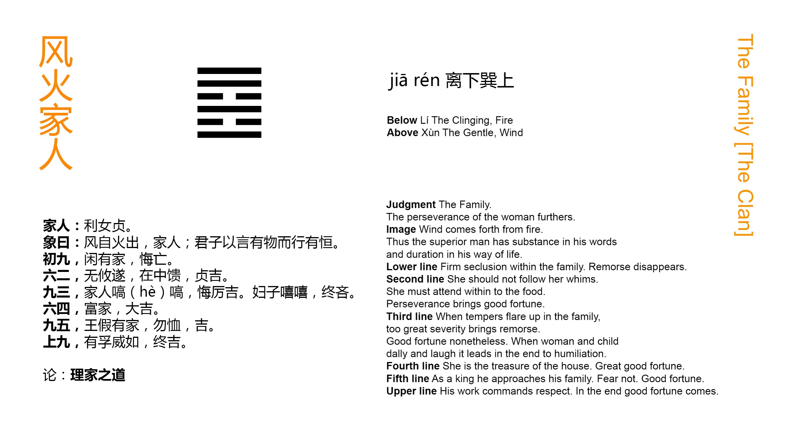

Chinese: 家人 ䷤ jiā rén

For (the realisation of what is taught in) Jiā Rén ䷤ , (or for the regulation of the family), what is most advantageous is that the wife be firm and correct.
1. The first NINE, undivided, shows its subject establishing restrictive regulations in his household Occasion for repentance will disappear.
䷤ changing to ䷴
Matching Line 1 in Adjacent Hexagram: ䷥
2. The second SIX, divided, shows its subject taking nothing on herself, but in her central place attending to the preparation of the food. Through her firm correctness there will be good fortune.
䷤ changing to ䷈
Matching Line 2 in Adjacent Hexagram: ䷥
3. The third NINE, undivided, shows its subject (treating) the members of the household with stern severity. There will be occasion for repentance, there will be peril, (but) there will (also) be good fortune. If the wife and children were to be smirking and chattering, in the end there would be occasion for regret.
䷤ changing to ䷩
Matching Line 3 in Adjacent Hexagram: ䷥
4. The fourth SIX, divided, shows its subject enriching the family. There will be great good fortune.
䷤ changing to ䷌
Matching Line 4 in Adjacent Hexagram: ䷥
5. The fifth NINE, undivided, shows the influence of the king extending to his family. There need be no anxiety; there will be good fortune.
䷤ changing to ䷕
Matching Line 5 in Adjacent Hexagram: ䷥
6. The topmost NINE, undivided, shows its subject possessed of sincerity and arrayed in majesty. In the end there will be good fortune.
䷤ changing to ䷾
Matching Line 6 in Adjacent Hexagram: ䷥
Jiā Rén ䷤, the name of the hexagram, simply means 'a household,' or 'the members of a family.' The subject of the essay based on the figure, however, is the regulation of the family, effected mainly by the co-operation of husband and wife in their several spheres, and only needing to become universal to secure the good order of the kingdom. The important place occupied by the wife in the family is seen in the short sentence of the Tuàn. That she be firm and correct, and do her part well, is the first thing necessary to its regulation.
Line 1 is strong, and in a strong place. It suggests the necessity of strict rule in governing the family. Regulations must be established, and their observance strictly insisted on.
Line 2 is weak, and in the proper place for it, -- the centre, moreover, of the lower trigram ☲. It fitly represents the wife, and what is said on it tells us of her special sphere and duty; and that she should be unassuming in regard to all beyond her sphere; always being firm and correct. See the Shì Kè ䷔, III.
Line 3 is strong, and in an odd place. If the place were central, the strength would be tempered; but the subject of the line, in the topmost place of the trigram, may be expected to exceed in severity. But severity is not a bad thing in regulating a family; -- it is better than laxity and indulgence.
Line 4 is weak, and in its proper place. The wife is again suggested to us, and we are told, that notwithstanding her being confined to the internal affairs of the household, she can do much to enrich the family.
The subject of the strong fifth line appears as the king. This may be the husband spoken of as also a king; or the real king whose merit is revealed first in his family, as often in the Shih, where king Wén is the theme. The central place here tempers the display of the strength and power.
Line 6 is also strong, and being in an even place, the subject of it might degenerate into stern severity, but he is supposed to be sincere, complete in his personal character and self-culture, and hence his action will only lead to good fortune.